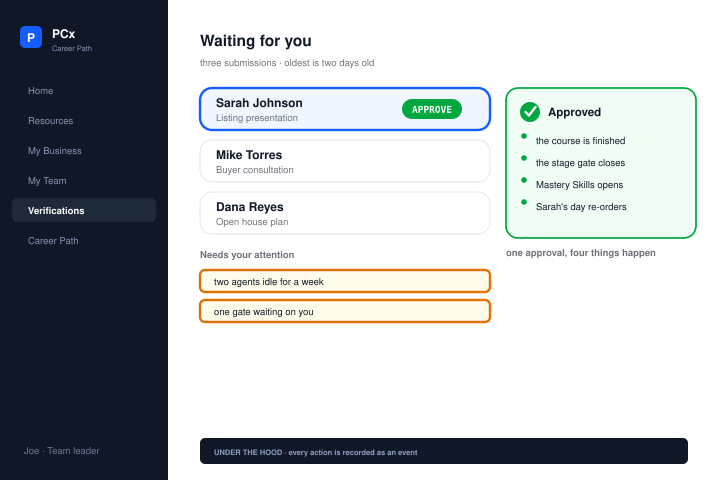
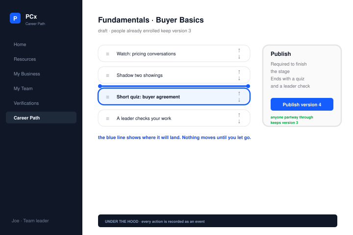

02 / PCx Career Path
Daily tasks and
career progression
An interactive frontend prototype for a real-estate career-path platform.
My role
I reviewed the requirements for career progression and daily work, then developed an AI-assisted frontend prototype of the proposed daily tasks and career stages.
Resolve conflicting requirements.
The brief used different stage names and completion rules in different places. It also treated “Productive Agent” as both a career stage and a production level.
I used the founder’s most recent dated direction to resolve conflicts rather than combining incompatible versions. The proposed path follows four stages: Getting Set Up, Fundamentals, Mastery Skills and Wealth Building. Questions that still required the founder’s decision stayed open; mechanisms not specified in the sources stayed labeled as proposals.
Explain task ranking.
The founder wanted the home screen to answer “What should I do today?” My proposed daily view puts urgency before priority, so due work does not get buried by a priority label alone. In the demo, an overdue medium-priority task appears ahead of high-priority work due today. “Why is this first?” explains the rule in place.
Three prototype views

Overdue tasks appear first. “Why is this first?” explains the order. The agent’s career stage stays beside the task list.


The agent-day screenshot is original. Verification and path-builder views are reconstructions. All use mock data. Select an image to zoom in.
I delivered the frontend prototype, proposed architecture and roadmap for discussion.
Open the original prototype External prototype Sample data